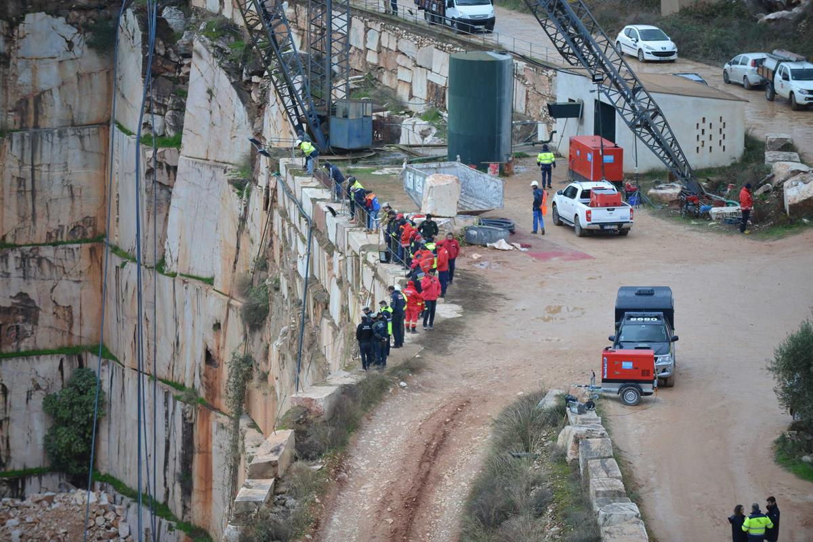
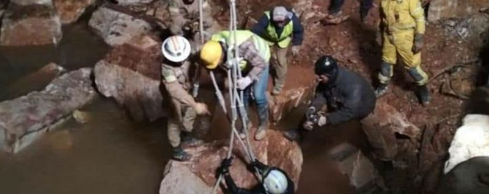

O comandante distrital de Operações de Socorro de Évora, José Ribeiro, considera que devem ser "moderadas" as expectativas de encontrar mais desaparecidos em Borba.
"A acessibilidade de veículos e equipamentos aquela pedreira é muito limitada e, por outro lado, a previsão meteorológica para as próximas horas aponta para precipitação", disse José Ribeiro.
O comandante, que falava aos jornalistas no decorrer de uma conferência de imprensa na Câmara de Borba, um dia após ter sido resgatado o corpo do segundo trabalhador, sublinhou que o empenho das diversas entidades envolvidas na operação se "mantém elevado".

"Por todas estas razões eu entendo que devemos moderar as nossas expectativas para o desenvolvimento da operação, não moderamos o empenho, que esse mantém-se elevado, mas nos próximos dias não esperamos grandes desenvolvimentos porque esta concentração do trabalho que estamos a fazer na drenagem vai levar exatamente algum tempo", explicou.
José Ribeiro acrescentou ainda que, nesta altura, as autoridades desconhecem a localização das duas viaturas que foram arrastadas para a pedreira na sequência do colapso da estrada.
O comandante garantiu que os meios envolvidos nas operações vão "manter-se" no terreno, classificando agora o local onde vão concentrar os trabalhos como sendo de "complexidade acrescida", situação que poderá levar a que os corpos dos três desaparecidos levem alguns dias a serem localizados.
"Por um lado é uma pedreira mais profunda e é uma pedreira sem atividade há algum tempo. É um plano de água de maior dimensão e que também comporta aqui alguns riscos e desconhecemos para já a localização das viaturas", disse.
Indicando que os trabalhos estão a decorrer "conforme planeado", José Ribeiro explicou ainda que as buscas e a drenagem entram também "numa nova fase".
"Em relação à busca continuam as operações de busca na pedreira maior, onde é possível realizar, com recurso a mergulhadores, e também com recurso ao equipamento da Marinha que é manobrado remotamente. Relativamente à drenagem mantém-se como objetivo esvaziar a pedreira de maior dimensão, fazendo uma monitorização dos níveis, quer desta pedreira, quer das pedreiras contíguas para avaliamos um eventual reforço de bombas nas próximas horas", explicou.
Para além destes trabalhos, as diversas entidades envolvidas na operação vão planear um conjunto de formas que possam garantir "melhores condições de trabalho" no fundo da pedreira, para mobilizar outro tipo de equipamentos e viaturas.
O corpo da segunda vítima mortal do deslizamento de terras e colapso de uma estrada em Borba foi retirado no sábado à noite de uma das pedreiras, revelou fonte do Comando Distrital de Operações de Socorro (CDOS) de Évora.
A mesma fonte indicou à agência Lusa que o corpo, que foi recuperado por volta das 22 horas, é do segundo operário da empresa que explora a pedreira.
Em comunicado, a Autoridade Nacional de Proteção Civil (ANPC) precisou que o corpo da segunda vítima mortal, o "segundo trabalhador que se encontrava a laborar no local no momento do aluimento de terras", foi localizada cerca das 21 horas.
O primeiro trabalhador foi retirado sem vida da pedreira, na terça-feira à tarde, quase 24 horas depois do acidente.
Além de dois mortos confirmados, o maquinista e o auxiliar da retroescavadora, há registo de três desaparecidos na zona, segundo as autoridades locais, que viajavam num automóvel e numa carrinha de caixa aberta que foram arrastados para dentro da pedreira quando passavam na estrada que ruiu.
O deslizamento de um grande volume de terras e o colapso de um troço da estrada entre Borba e Vila Viçosa, no distrito de Évora, para o interior de poços de pedreiras ocorreu na segunda-feira passada às 15.45 horas.